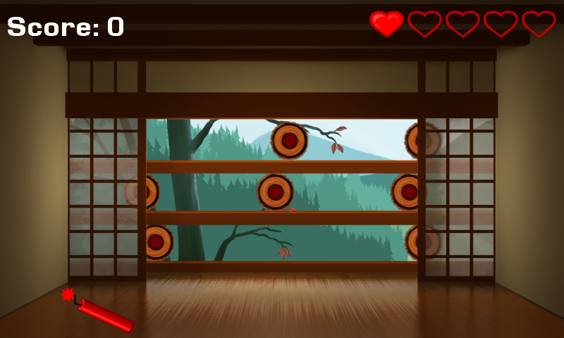

NinjAcademy
Ported from Microsoft's Windows Phone/Reach NinjAcademy Starter Kit for XNA 4.0.
Source for this sample on GitHub ↗

Play ▸Opens in a new tab. The first load prepares the browser for the game's background loading thread.
About this sample
Throw shurikens at moving wooden targets and slice airborne bamboo with a sword swipe. Missing bamboo costs a life; slicing dynamite ends the round. The game includes instructions, a countdown, several phases, pause and a persistent high-score table.
Controls
| Action | Control |
|---|---|
| Start and continue | Tap or click the menu choice, then the instructions screen |
| Throw a shuriken | Tap or click a target |
| Slice bamboo | Drag across it |
| Pause or resume | Escape; choose Resume or Quit in the pause menu |